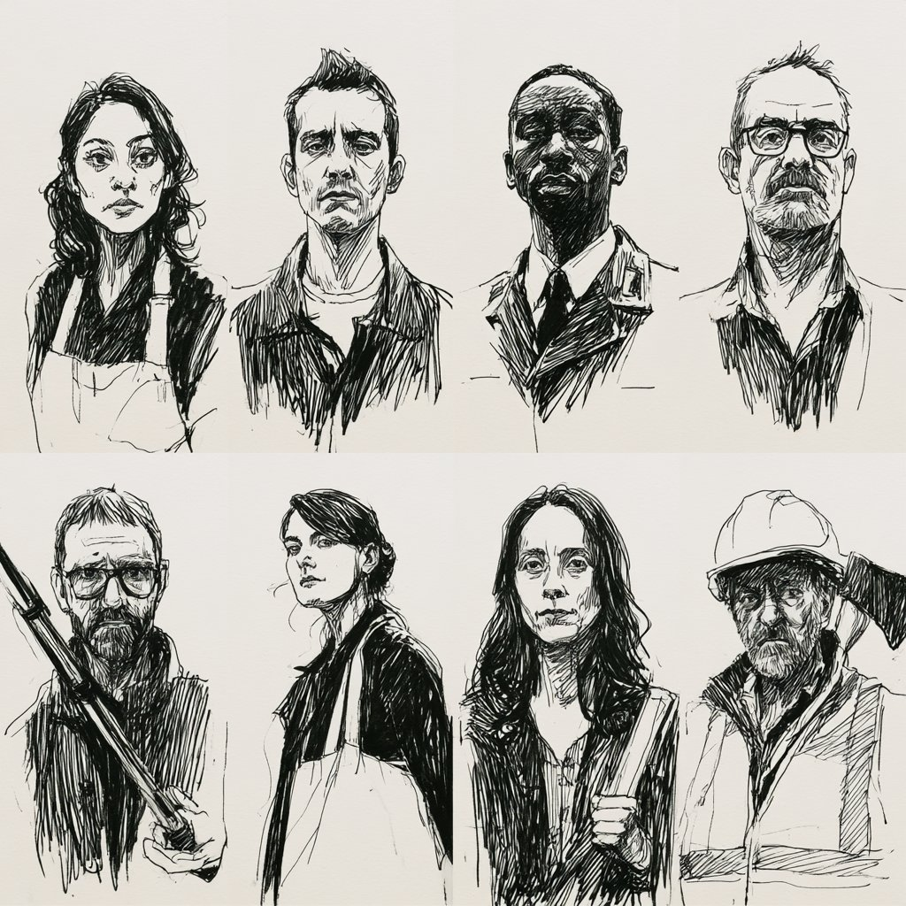
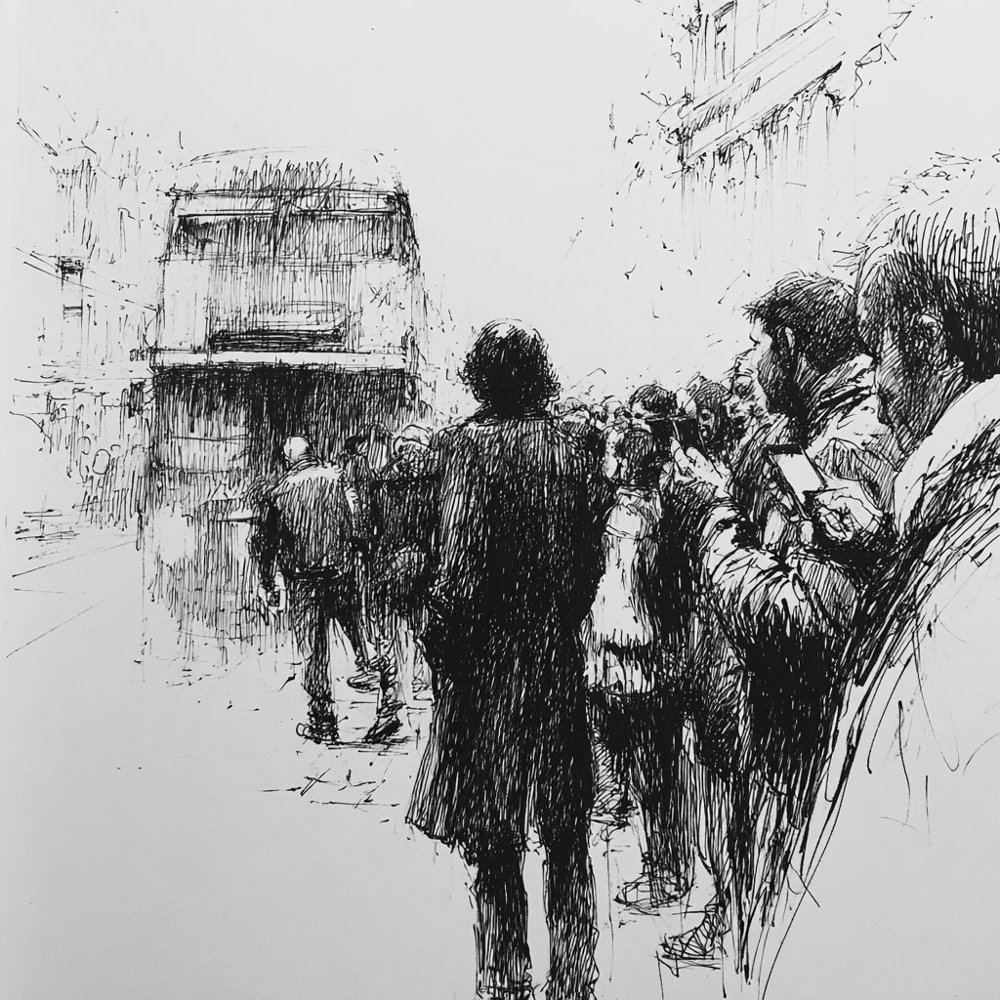
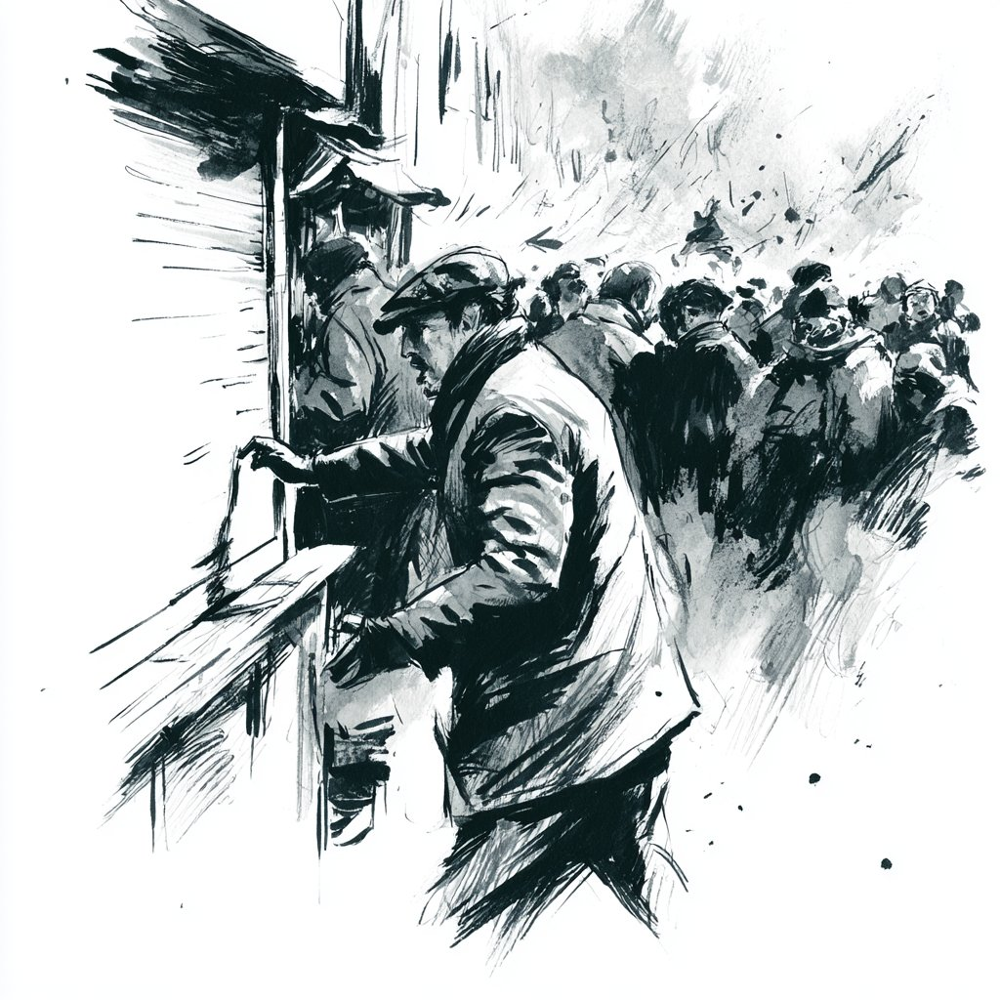
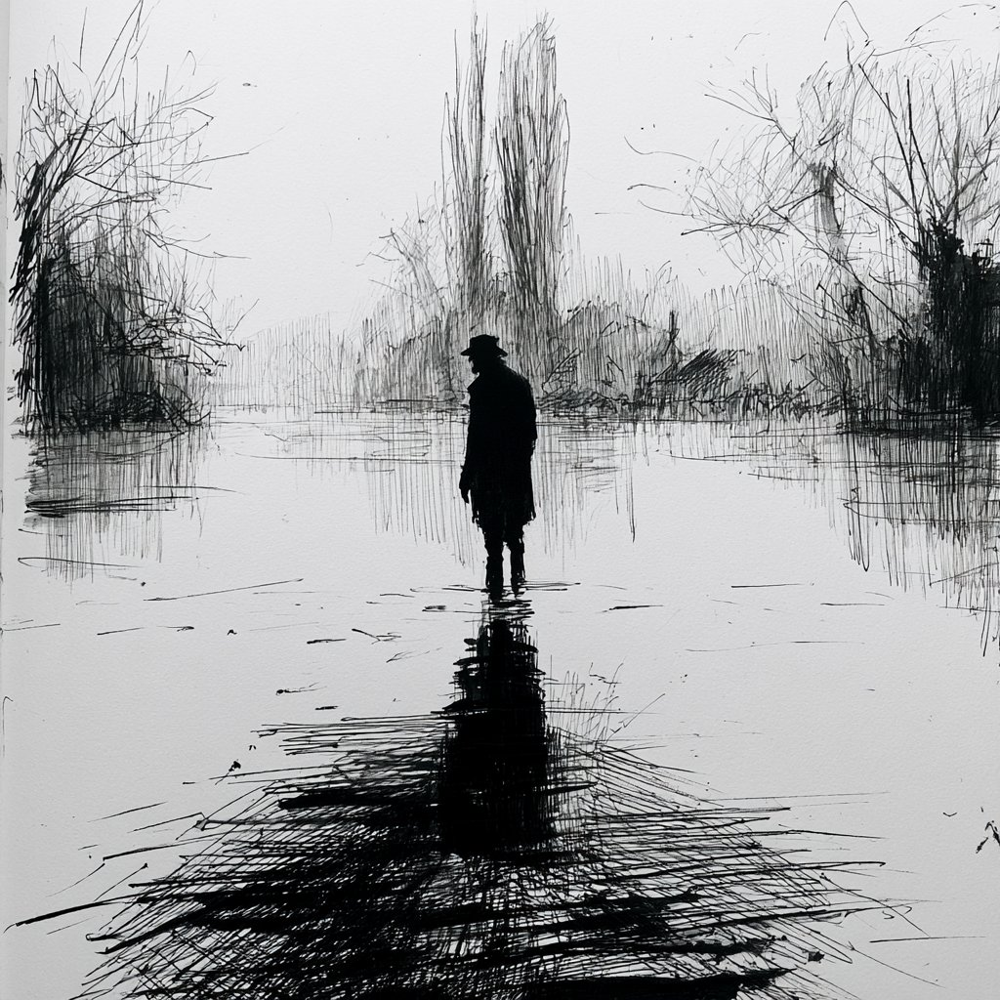
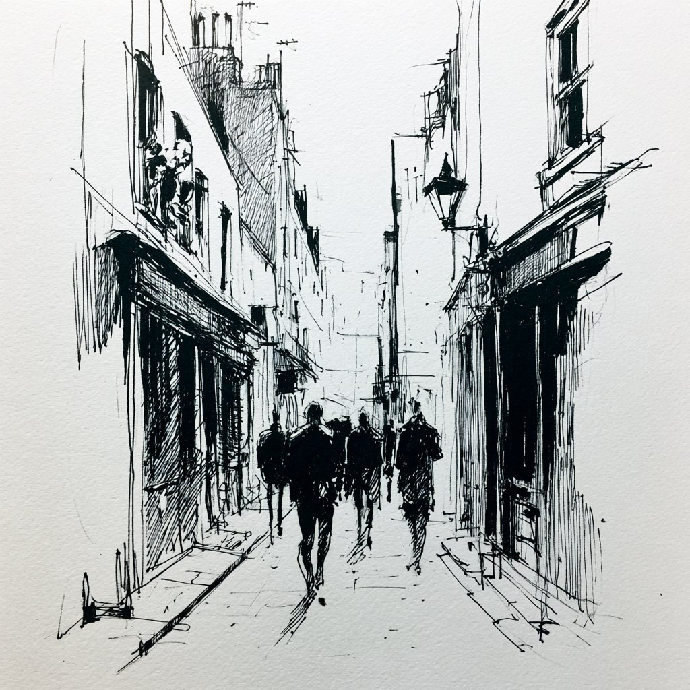
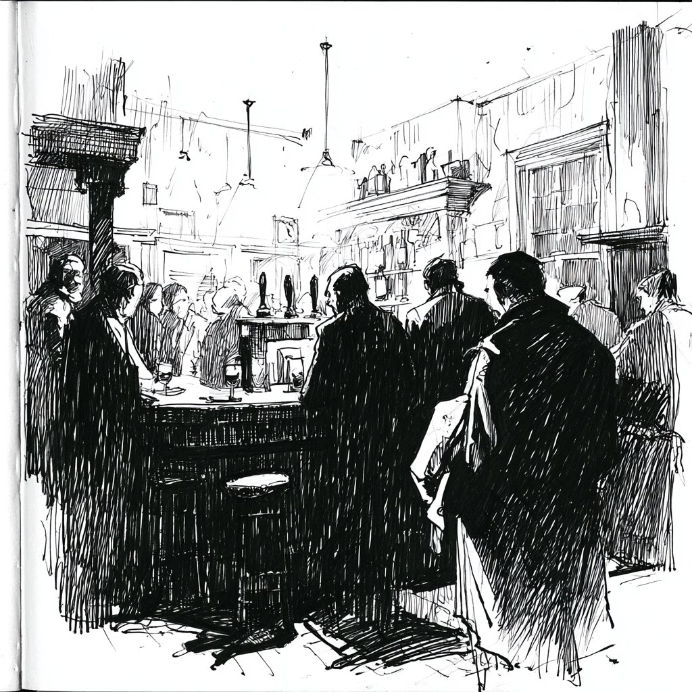
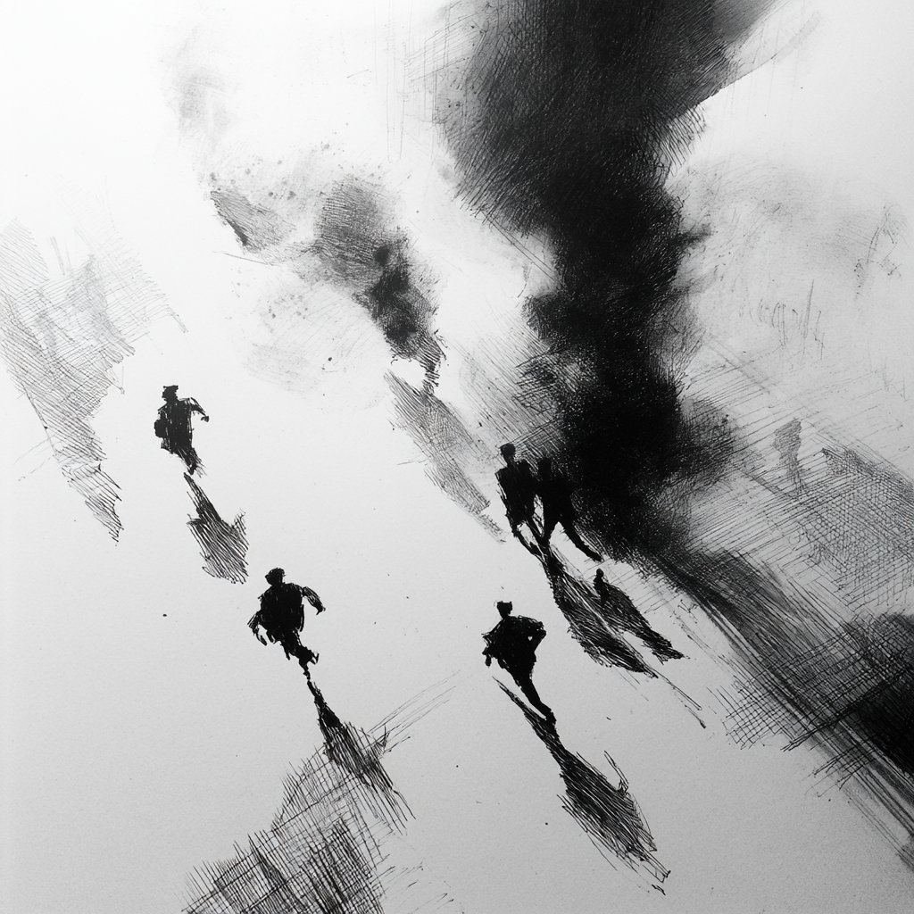

Acts
NPCs
Clues
Handouts
Players
Ref
Artwork
Session Checkpoints
0:15Characters placed — alert delivered
1:00First infected encountered
1:15 ⚠MARKET BREAKS — Act I hard end
2:00Blue Anchor decision made
2:15 ⚠REANIMATION — must happen
2:30Cordon fragment heard
2:45Route chosen — bridge or boat
3:05 ⚠THE COST — hard deadline
3:15Act III resolved
3:30Epilogue done
Table Briefing
Read before play begins
The Truth (GM Only)
Meridian Biosciences / COBR decision
Introduction ~15 min
Run a 30-second snapshot for each character. Normal Sunday. Then every phone buzzes. Use the 📱 ALERT button in the header for the NHS alert reveal.
Individual Openings
Read aloud to each player in turn
Convergence Point
Getting the group together
Act I — Something Is Wrong ~60 min
Goal: Establish confusion. Make first contact. Trigger the Market breaking. Players form a group. The nature of what they're dealing with is suspected but not confirmed.
Locations
Bus Crash — Southwark St
Convergence point · First infected present

Borough Market
Fatima's stall · Improvised weapons · The break happens here

Jubilee Walkway
Figure in the river · Maggie's route · First SAN roll

The Shard Lobby
Olu's position · Radio · CCTV · Roof vantage
Key Beats
The High-Vis Man
First infected — passive until touched
The Market Breaks
Hard trigger — must fire by 1:00
Social Media Fragments
Read these aloud when players check their phones. Vary which one based on who's asking.
Phone Feed Fragments
Tap to reveal
Pacing Note
Market breaking is the Act I hard exit. Must happen by 1:00. If not naturally triggered, a fully-turned infected attacks a stall vendor in full public view.
Act II — The Long Walk South ~90 min
Goal: Moral choices compound. Drone stream reveals scale. Reanimation of a known person is the act hinge. Cordon fragment triggers Act III decision.
Locations
Bermondsey Street
False calm · Scavenge opportunity · Pharmacy conflict

The Blue Anchor (Pub)
12 survivors · Danny is infected · Sharif auto-detects if present

Bermondsey Pharmacy
Declan + Ryan looting · Human conflict · Ryan may be bitten
Guy's Hospital Car Park
High ground · St Thomas' visible — overwhelmed · Dead end if surrounded
Key Beats
The Blue Anchor Decision
The moral centre of the scenario
The Reanimation
Act II/III hinge — MUST happen
The Cordon Fragment
Hard trigger for Act III — by 2:30
The Pharmacy — Human Conflict
Declan and Ryan
Pacing Note
At 2:45, move to Act III. The cordon fragment is the hard pivot. If it hasn't naturally landed, force it on Callum's radio.
Act III — The Bridge or the River ~30 min
Goal: Fast, physical, urgent. No new information — only consequences. Someone does not reach the exit.
The Two Routes
Tower Bridge
On foot — civilian group controls access
Bankside Pier — The RIB
Via Blackfriars underpass — heavily infected
The Cost
THE COST — Required at 3:05
This must happen. Do not pull it.
At 3:10 — bridge or boat reached. Cost paid. Move to Epilogue.
Epilogue — What It Cost ~15 min
Outcomes
Outcome Table
Closing Read-Aloud
Adapt to outcome
NPCs
Clue Tracker
Tap a clue to cycle: Pending → Found → Missed → Pending. Essential clues marked in red.
Handouts
Players
Tap +/- to adjust HP/SAN/MP
Quick Reference
Zombie Stats
Romero-style — slow, relentless
Sanity Loss Table
Tap header to open
BRP Mechanic Calls
Quick reference for this scenario
Technology (May 2026)
What works, what fails, what misleads
Infection — The Arc
Does not resolve in this session
Artwork — Day One
Reportage ink sketch style. Tap any image to view fullscreen or show to players.
Cover
The Survivors — Eight Portraits
All Acts · 159-ART-09
Act I — Something Is Wrong
Bus Crash — Southwark St
Act I · 159-ART-02
Borough Market — The Break
Act I · 159-ART-03
The Figure in the River
Act I · 159-ART-04
Act II — The Long Walk South
Bermondsey Street
Act II · 159-ART-05
The Blue Anchor
Act II · 159-ART-06
Act III — The Bridge or the River

Tower Bridge — Pete & the Group
Act III · 159-ART-07
Bankside Pier — The RIB
Act III · 159-ART-08

Aerial View — South Bank
Cover · 159-ART-01